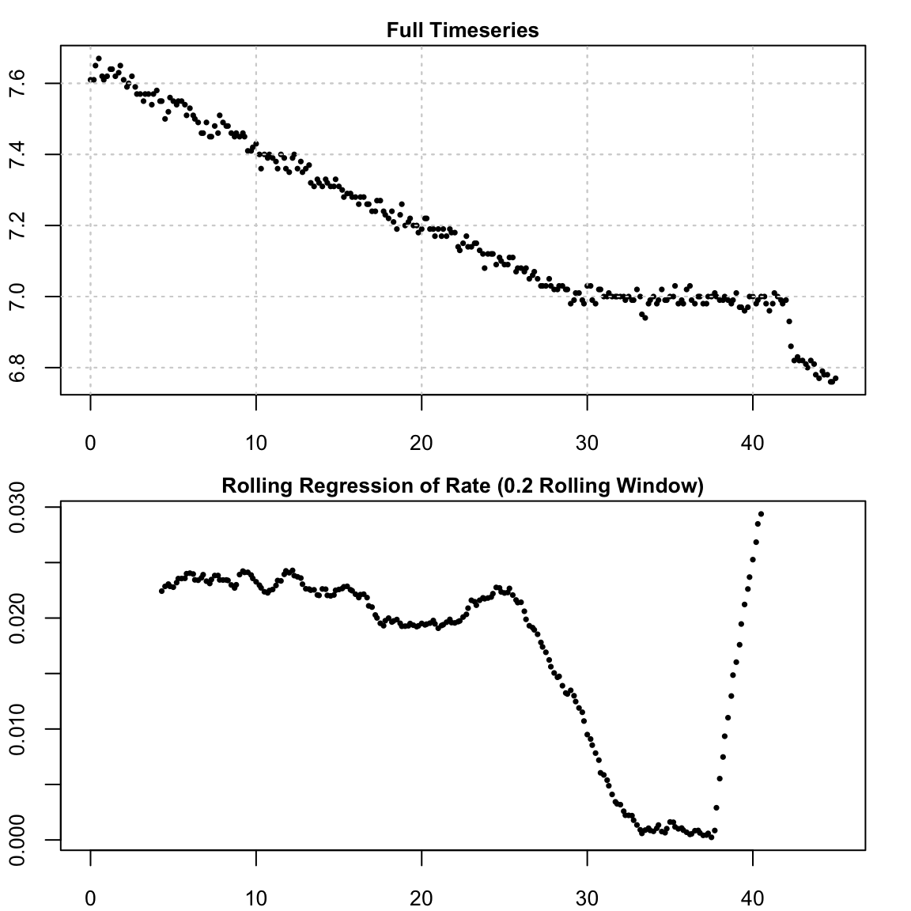
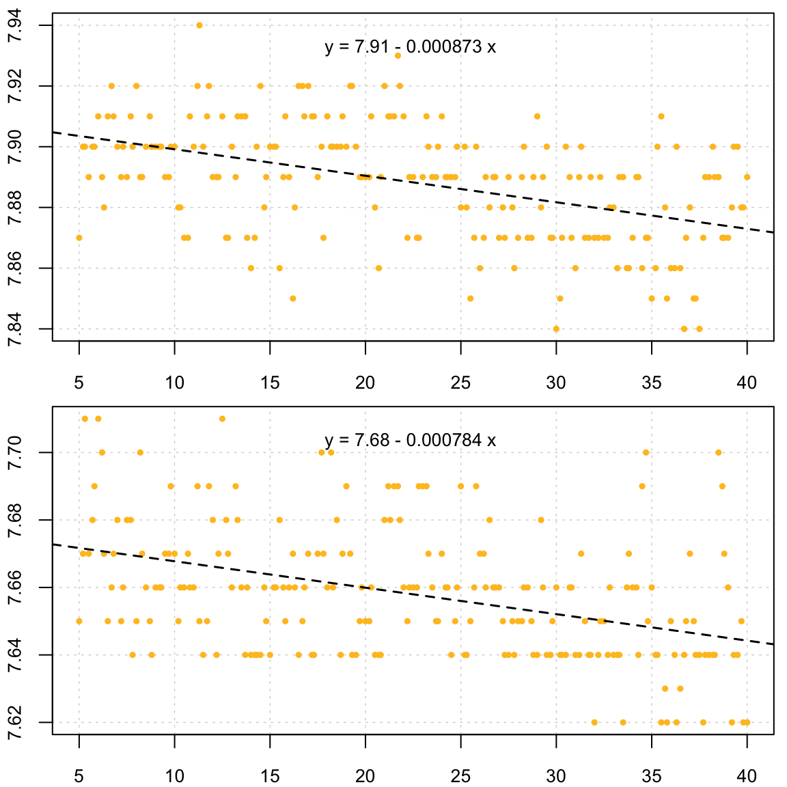
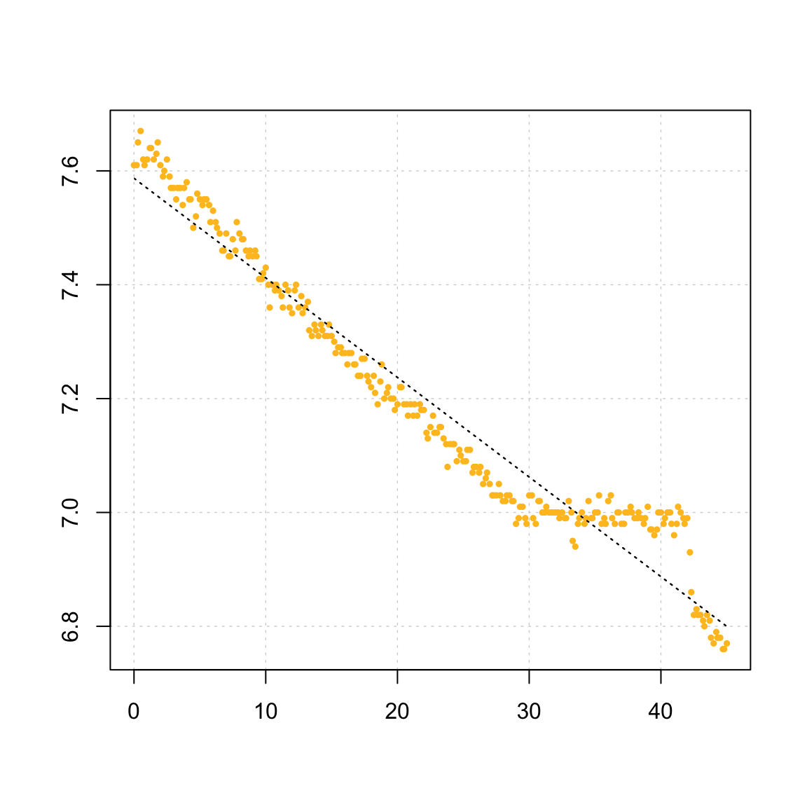
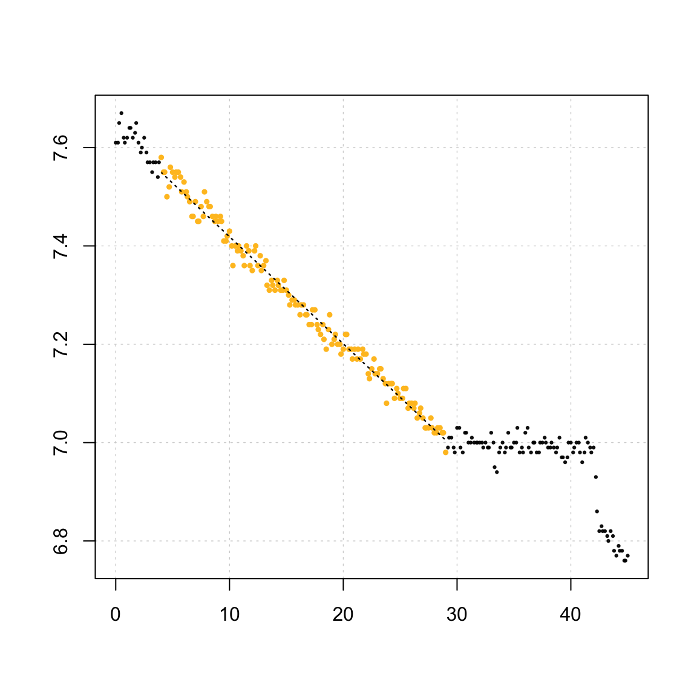
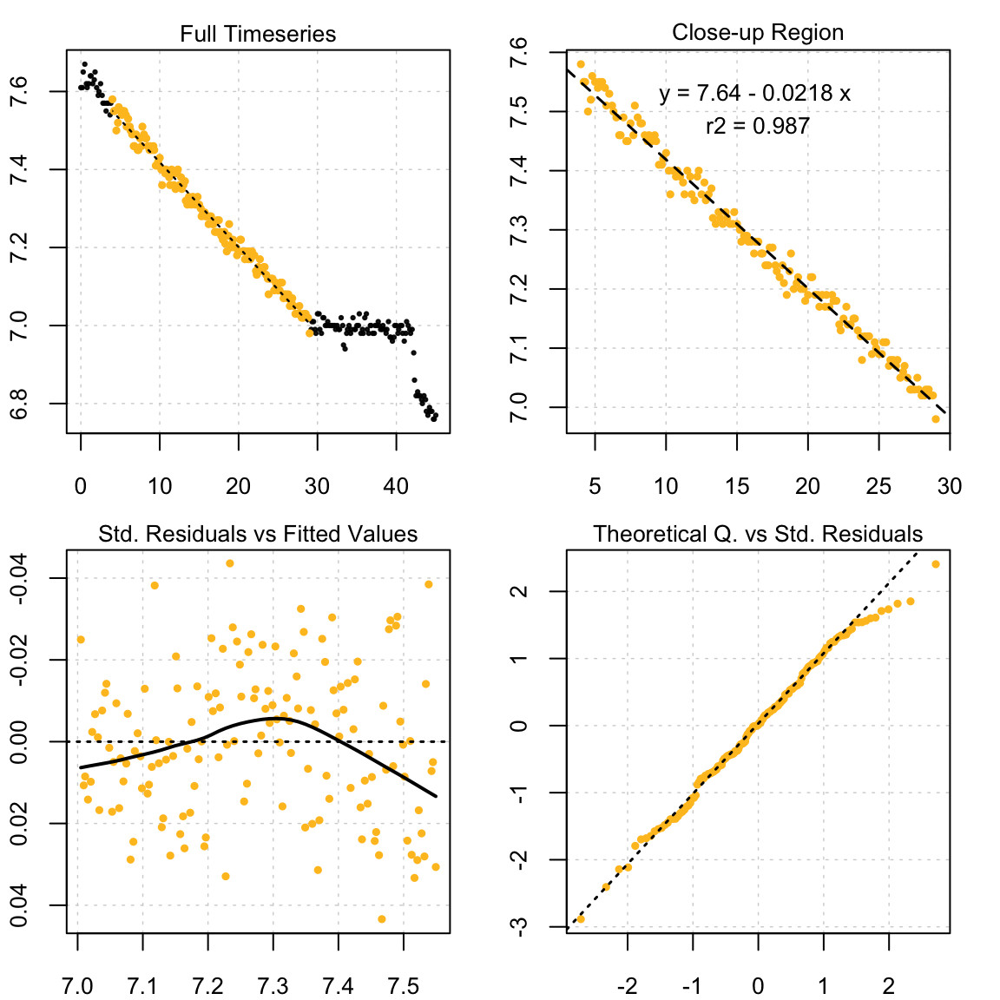

Here we describe a typical workflow for a closed-chamber respirometry experiment. The example data used here is urchins.rd, where the first column of the data frame is time data, while the remaining 18 columns are dissolved \(O_2\) data. Columns 18 and 19 contain background respiration recordings. The units are minutes and mg/L of \(O_2\), however all analyses in respR are unitless, and we only consider units when we later come to convert rates.
head(urchins.rd)
#> # A tibble: 6 x 19
#> time.min a b c d e f g h i j
#> <dbl> <dbl> <dbl> <dbl> <dbl> <dbl> <dbl> <dbl> <dbl> <dbl> <dbl>
#> 1 0 7.86 7.86 7.64 7.65 7.87 7.74 7.62 7.65 7.96 7.75
#> 2 0.2 7.87 7.79 7.6 7.71 7.87 7.72 7.61 7.66 7.97 7.72
#> 3 0.3 7.89 7.7 7.6 7.7 7.9 7.72 7.61 7.63 7.98 7.72
#> 4 0.5 7.9 7.68 7.6 7.72 7.92 7.74 7.62 7.66 7.97 7.72
#> 5 0.7 7.87 7.64 7.6 7.67 7.9 7.73 7.59 7.65 7.95 7.71
#> 6 0.8 7.82 7.69 7.61 7.61 7.88 7.7 7.6 7.65 7.94 7.7
#> # ... with 8 more variables: k <dbl>, l <dbl>, m <dbl>, n <dbl>, o <dbl>,
#> # p <dbl>, b1 <dbl>, b2 <dbl>We first use inspect() to prepare the data and to scan for:
NA/NaN) dataBy default, the function assumes the first column of the data frame is time data, while the second column is \(O_2\) data. In the case of urchins.rd where a multi-column dataset is provided, the function defaults to using the first two columns. However, the time = and oxygen = arguments can modify that behaviour to select particular columns.
urchin <- inspect(urchins.rd, time = 1, oxygen = 15)
#>
#> # inspect # -----------------------------
#> time.min n
#> NA/NAN pass pass
#> sequential pass -
#> duplicated pass -
#> evenly-spaced WARN -
#> Uneven time data locations (first 20 shown) in column: time.min n
#> [1] 1 2 3 4 5 6 7 8 9 10 11 12 13 14 15 16 17 18 19 20#> Warning: Time values are not evenly-spaced.From the plot, we can see irregularities in these data near the end of the timeseries (in this case the specimen had interfered with the oxygen sensor). A linear regression of the entire data series would therefore give an erroneous calculation of the true rate. However, the bottom output plot shows that over the first 150 rows, oxygen uptake shows a consistent rate, and so in this experiment this section would be suitable for analysis.
The function also warns us that time data is not numerically evenly-spaced. However, this does not mean the data cannot be processed. Rather than make assumptions that rows represent evenly spaced datapoints, the functions in respR use actual time values for analyses and calculations, and so even irregularly spaced data are analysed correctly. This warning is for information purposes only: it is to make the user aware that if they use row numbers for manual operations such as subsetting, the same width may not represent the same time period. For now, the data frame is saved as an object, urchin which contains the original data columns we selected coerced into a data frame, and various other metadata.
It should be noted that using inspect() is optional - the main functions in our package will readily accept any data frame as long as data are numeric and error-free. Running inspect() is a qualitative, exploratory step that highlights potential issues about the data before analysis. We use this particular example, with an obvious error towards the end, to illustrate the point that you should always visualise and explore your data before analysis. respR has been designed to make this easy.
Note there is an older version of this function called inspect_data() - this function has been deprecated, but kept to maintain compatibility with older code. It will not be updated in the future, so users should use inspect().
The presence of microorganisms may be a potential source of experimental bias, and we may want to account for background respiration rates during experiments. Since background rates typically account for a small percentage of experimental rates, these often-called “blank” experiments are routinely conducted alongside, or before and after main experiments, and often the rates are averaged across several datasets to obtain a more accurate estimate of the correction.
The function calc_rate.bg() can be used to simultaneously process multiple background rate measurements as long as they share the same units of time and oxygen data as the experiments they will be used to correct. In urchins.rd, background respiration was recorded and saved in columns 18 and 19. We analyse the data using the specialised function calc_rate.bg() and save the output as an object. Note the function allows us to subset the data, here by time from 5 to 40 minutes, to remove potentially erroneous sections at the start (or end) before the system had reached stability.
bg <- calc_rate.bg(urchins.rd, xcol = 1, ycol = 18:19, from = 5, to = 40, by = "time")
print(bg)
#> Rate(s):
#> [1] -0.0008733404 -0.0007841207
#> Average bg rate:
#> [1] -0.0008287306This object contains both individual background rates for each data column entered, and an averaged rate which, by default, will be used as the correction rate when this is applied later in adjust_rate.
Calling the function calc_rate() on the inspect() object, with no additional arguments, will prompt the function to perform a linear regression on the entire data series.
calc_rate(urchin) # same as: calc_rate(urchin$df)
#>
#> # calc_rate # -------------------
#> Rate(s):
#> [1] -0.01749242Note how the function recognises the inspect() object. Alternatively, you can specify a data.frame object containing raw data, in which case the function will automatically consider the first column as time data, and the second column as dissolved \(O_2\) data.
In many cases, there is a need to truncate or subset the data before rate is determined. For example, we may want to determine rate over an exact period of time, or within a threshold of O2 concentrations. Equipment interference or other factors may cause irregularities in the data. We can work around such errors by subsetting the regions that are not erroneous and still obtain valid results.
Based on the from and to arguments, a user may use calc_rate() to subset data in any of 4 ways:
by = "time") - “What is the rate over a specific 25 minute period?”
by = "o2") - “At what rate is oxygen consumed between saturation points of 95% and 80%?”
by = "proportion") - “What is the rate from 4/5ths (0.8) to halfway (0.5) along the data?”
by = "row"). - “I’d like to determine rate between rows 11 and 273.”
We do not need to be overly precise; if input values of O2 and time do not match exactly to a value in the data, the function will identify the closest matching values, rounded down, and use these for subsequent calculations.
Here we’ll select a 25 minute period before the interference occurred:
rate <- calc_rate(urchin, from = 4, to = 29, by = "time")
The saved object can be exported to a file, or explored using generic R commands.
# uncomment to run and save as file write.csv(summary(rate), file =
# 'results.csv')
print(rate)
#>
#> # calc_rate # -------------------
#> Rate(s):
#> [1] -0.02177588
summary(rate)
#> Summary:
#> intercept_b0 rate_b1 rsq row endrow time endtime oxy endoxy
#> 1: 7.636454 -0.02177588 0.987 25 175 4 29 7.58 6.98
#> rowlength timelength rate_twopoint
#> 1: 150 25 -0.024The rate can be seen as the second entry rate_b1, and other summary data are saved in the object. The output also includes a rate_2pt. This is the rate determined by simple two-point calculation of difference in O2 divided by difference in Time. For almost all analyses, the rate_b1 should be used. See two-point analysis for an explanation of this output and when it should be used.
Plotting the output provides a series of diagnostic plots of the data subset that was analysed.
plot(rate)
#>
#> # plot # ------------------------
#> Plotting...this may take a while for large datasets.
#> Done.Since background rate has been calculated in calc_rate.bg(), adjustment is straightforward using the function adjust_rate(). The rate input can be an object of class calc_rate or auto_rate, or any numeric value.
a.rate <- adjust_rate(rate, bg)
#>
#> Rate adjustments applied. Use print() command for more info.
a.rate
#>
#> # adjust_rate # -------------------------
#> Note: please consider the sign of the value while correcting the rate.
#>
#> Rank/position 1 result shown. To see all results use summary().
#> Input rate: -0.02177588
#> Adjustment: -0.0008287306
#> Adj. rate: -0.02094715A background correction can also be entered manually. Care should be taken to include the correct (typically negative) sign.
a.rate <- adjust_rate(rate, -0.00083)
#>
#> Rate adjustments applied. Use print() command for more info.
a.rate
#>
#> # adjust_rate # -------------------------
#> Note: please consider the sign of the value while correcting the rate.
#>
#> Rank/position 1 result shown. To see all results use summary().
#> Input rate: -0.02177588
#> Adjustment: -0.00083
#> Adj. rate: -0.02094588For experiments where there is a quantified background input of oxygen, such as in open-tank respirometry, adjust_rate() can be used to correct rates using a positive background value.
a.rate <- adjust_rate(rate, 0.002)
#>
#> Rate adjustments applied. Use print() command for more info.
a.rate
#>
#> # adjust_rate # -------------------------
#> Note: please consider the sign of the value while correcting the rate.
#>
#> Rank/position 1 result shown. To see all results use summary().
#> Input rate: -0.02177588
#> Adjustment: 0.002
#> Adj. rate: -0.02377588Note, that until this point respR has not required units of time or oxygen to be entered. Here, we convert calculated, unitless rates to specified output units.
For example, we may want to calculate:
The function convert_rate() can be used to convert rate values to chamber volume and/or specimen mass specific values. This requires the units of the original data (o2.unit, time.unit), and in SI units (L, kg) the volume of fluid in the chamber, and mass of the specimen.
Note: the volume is volume of water in the respirometer, not the volume of the respirometer. That is, it represents the effective volume; a specimen might displace a significant proportion of the water, depending on its size. Therefore the volume of water entered here should equal the volume of the respirometer minus the volume of the specimen. It depends on your experiment how you determine water volume. There are several approaches to calculate the volume of a specimen; geometrically, through displacement in a separate vessel, or calculated from the mass assuming a density value (e.g. for fish it is often assumed they have an equal density as water, that is ~1000 kg/m^3). Volume could also be determined directly by pouring out the water at the end of the experiment, or by a weighing approach.
For an example of \(VO_2\), or absolute oxygen uptake rate, we may convert the output of calc_rate() to O2 consumed per hour:
convert_rate(a.rate,
o2.unit = "mg/L",
time.unit = "min",
output.unit = "mg/h",
volume = 1.09)
#>
#> # convert_rate # ------------------------
#> Rank/position 1 result shown. To see all results use summary().
#> Input:
#> [1] -0.02377588
#> [1] "mg/L" "min"
#> Converted:
#> [1] -1.554943
#> [1] "mg/hour"We can also convert the rate to a volume-corrected, mass-specific rate:
convert_rate(a.rate,
o2.unit = "mgl-1",
time.unit = "m",
output.unit = "mg/s/kg",
volume = 1.09,
mass = 0.19)
#>
#> # convert_rate # ------------------------
#> Rank/position 1 result shown. To see all results use summary().
#> Input:
#> [1] -0.02377588
#> [1] "mg/L" "min"
#> Converted:
#> [1] -0.002273308
#> [1] "mg/sec/kg"A “fuzzy” string matching algorithm is used to automatically recognise variations in base units, allowing natural, intuitive input of units. For example, "ml/s", "mL/sec", "milliliter/s", and "millilitre/second" are all equally identified as mL/s. Unit delimiters can be any combination of a space, dot (.), forward-slash (/), or the “per” unit (-1). Thus, "ml/kg", "mL / kg", "mL /kilogram", "ml kg-1" or "ml.kg-1" are equally recognised as mL/kg. For a reminder on what units are available to use, call unit_args():
unit_args()
#> Note: A string-matching algorithm is used to identify units.
#> E.g. all of these are the same: mg/L; mg/l, mg L-1, mgL-1, mg per litre, mg.l-1, mg.L-1
#>
#> O2 Units - Do not require t, S and P
#> [1] "mg/L" "ug/L" "mmol/L" "umol/L"
#>
#> O2 Units - Require t, S and P
#> [1] "mL/L" "mg/kg" "ug/kg" "mmol/kg" "umol/kg" "mL/kg" "%"
#> [8] "Torr" "hPa" "kPa" "mmHg" "inHg"
#>
#> Time units
#> [1] "s" "m" "h"
#>
#> Output mass units
#> [1] "ug" "mg" "g" "kg"This is an example of a straightforward analysis of a closed-chamber respirometry experiment. This entire analysis can be documented and shared in only a few lines of code, making it entirely reproducible if the original data file is included:
# import and inspect
urchin <- inspect(urchins.rd, time = 1, oxygen = 15)
# Background
bg <- calc_rate.bg(urchins.rd, xcol = 1, ycol = 18:19, from = 5, to = 40, by = "time")
# Specimen rate
rate <- calc_rate(urchin, from = 4, to = 29, by = "time")
# Adjust rate
a.rate <- adjust_rate(rate, bg)
# Convert to final rate units
urchin_MO2 <- convert_rate(a.rate,
o2.unit = "mgl-1",
time.unit = "m",
output.unit = "mg/s/kg",
volume = 1.09,
mass = 0.19)
# Alternatively, use dplyr pipes, adding a print() between functions:
urchins.rd %>% # With the data object,
inspect(1, 15) %>% # inspect, then
calc_rate(from = 4, to = 29, by = "time") %>% # calculate rate, then
print() %>%
adjust_rate(
calc_rate.bg(urchins.rd, xcol = 1, ycol = 18:19, # adjust bg rate, then
from = 5, to = 40, by = "time")) %>%
print() %>%
convert_rate(o2.unit = "mgl-1", time.unit = "m",
output.unit = "mg/s/kg", volume = 1.09, mass = 0.19) # convert units.